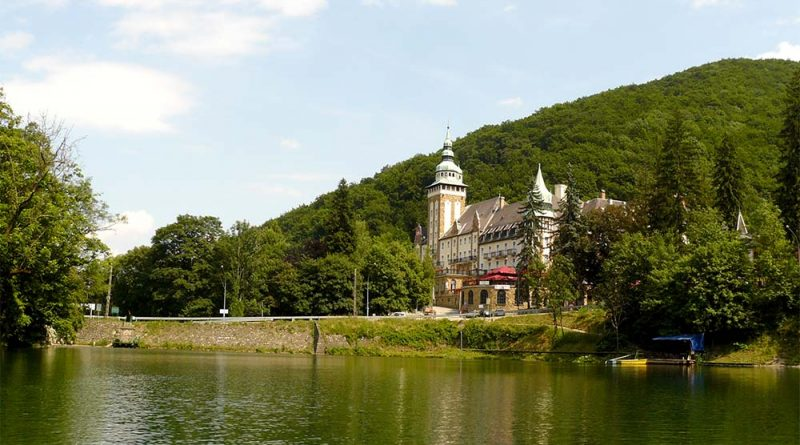

A Fertő tó Magyarország északnyugati határa mentén, Sopron közelében található. Közép-Európa harmadik legnagyobb állóvize, nagyobb része Ausztriához, a többi része (nagyjából egynegyede) pedig Magyarországhoz tartozik. Magyarország második legnagyobb természetes tava. A Fertőt tó vize sekély, ezért nyáron hamar felmelegszik. A nagyjából 20 ezer éves tó nevének jelentését adó – Fertő – szó jelentése egykor mocsaras, agyagos, sáros hely volt. A tó sótartalma 33-szorosa a Balatonénak, ennek tulajdonítják gyógyító erejét. Hossza 35 kilométer, szélessége 7-15 kilométer, felülete 309 km2, melyből a magyar terület 87 km2. Vízmélysége átlagosan 50-60 cm, de a legmélyebb részeken sem haladja meg a 180 cm-t. Tengerszint feletti magassága 115,45 méter.
A Felső-Hámor és Lillafüred határában másfél kilométer hosszan húzódó Hámori-tó a Garadna völgyében fekszik, a Bükk-hegység keleti részén. A Hámori-tó egy mesterségesen megnagyobbított tó, mely eredetileg a a Szinva patak mésztufagátjának duzzasztó hatása miatt keletkezett. A jelenlegi tó kialakításának gyakorlati oka volt, melyet az 1810-es években egy völgyzáró gát kiépítésével alakítottak ki, a Szinva és Garadna patakok vízéből. A duzzasztás célja a kohászat állandó vízellátása volt. A hámori-tó igen kedvelt a horgászok körében, főként az országban ritkaságnak számító pisztrángállománya miatt. Az ide látogató turistáknak lehetőségük van megkóstolni a helyi specialitást, a tizenkét különböző fűszerrel ízesített sült pisztrángot.
| Név | Település | Kialakulás típusa | Területe (km2) | Teljes vízgyűjtő területe (km2) |
|---|---|---|---|---|
| Rudabányai tó | Rudabánya | mesterséges (bányató) | ||
| Fertő tó | szélvájta | 75,41 | 1493 | |
| Hámori tó | Miskolc (Lillafüred) | mesterséges | 0,106 |